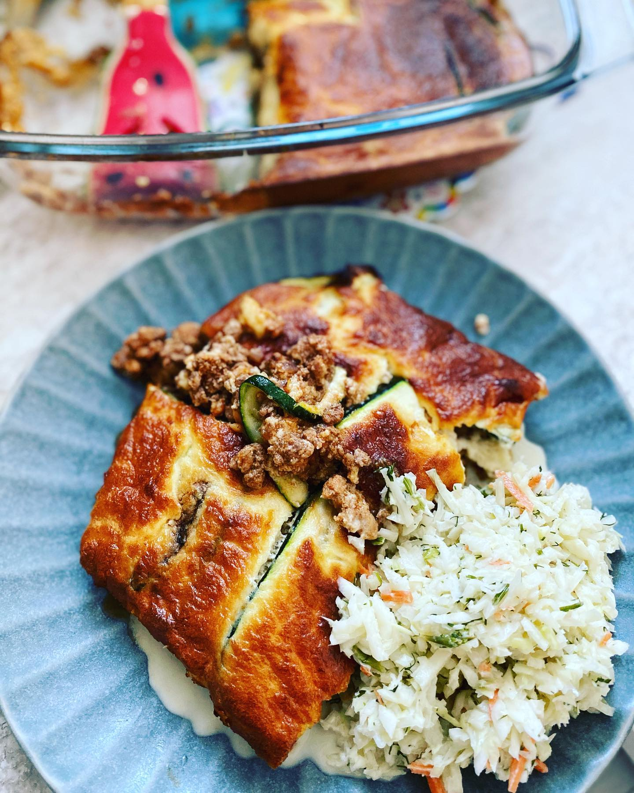

Grécka musaka podľa @najedzonaola — Normy Jedál
Nie lubię pączków ani faworków, więc nie mam dziś najmniejszego kłopotu z tym, że go nie zjem 🙂
Zamiast tego zdecydowanie bardziej wolę zjeść Musakę w wersji bez ziemniaków 😍
Przepis na 2 porcje
- 1 mały bakłażan
- 1 średnia cukinia
- 400 g mięsa mielonego z szynki
- 100 ml przecieru pomidorowego
- 1 czerwona cebula
- 20 ml oleju
Beszamel:
- 40 g masła
- 15 g mąki
- 250 ml mleka
- 30 g sera żółtego
- 1 jajko
Sól pieprz gałka muszkatołowa
1. Bakłażan i cukinie kroimy w plastry i solimy. Czekamy aż puści wodę i wycieramy ręcznikiem papierowym.
2. W tym czasie podsmażamy posiekaną cebulkę razem z mięsem. Doprawiamy wg uznania 🙂 u mnie słodka papryka sól i pieprz.
3. Dodajemy przecier pomidorowy i mieszamy.
4. Na oleju podsmażamy z dwóch stron bakłażan, później cukinię.
5. Układamy w naczyniu żaroodpornym plastry bakłażana, nakładamy mięso i na wierzch cukinię.
Wstawiamy piekarnik 180 stopni termo.
6. W garneczku rozpuść masło, dodaj mąkę i wymieszaj.
7. Wlej mleko i zagotuj.
8. Dodaj starty ser, dopraw solą i pieprzem oraz gałką muszkatołową.
9. Wystudź sos i dodaj żółtko. Energicznie wszystko wymieszaj. Białko ubij na sztywną pianę i dodaj do wystudzonego sosu.
10. Nałóż sos na całość. Wstaw do piekarnika i piecz 20 minut :)
#mussaka #greckamusaka #ketoobiad #ketoprzepis #przepisnaobiad #szybkiobiad #zamistpączka #dietetycznie #dieta #pysznie #palcelizać #przepis #przepisna #szybkiedanie #zdrowo #food #instafood #foodporn #ketofood #ketomania #ketoprzepisy #najedzonaola #dietetyk #ketowyzwanie